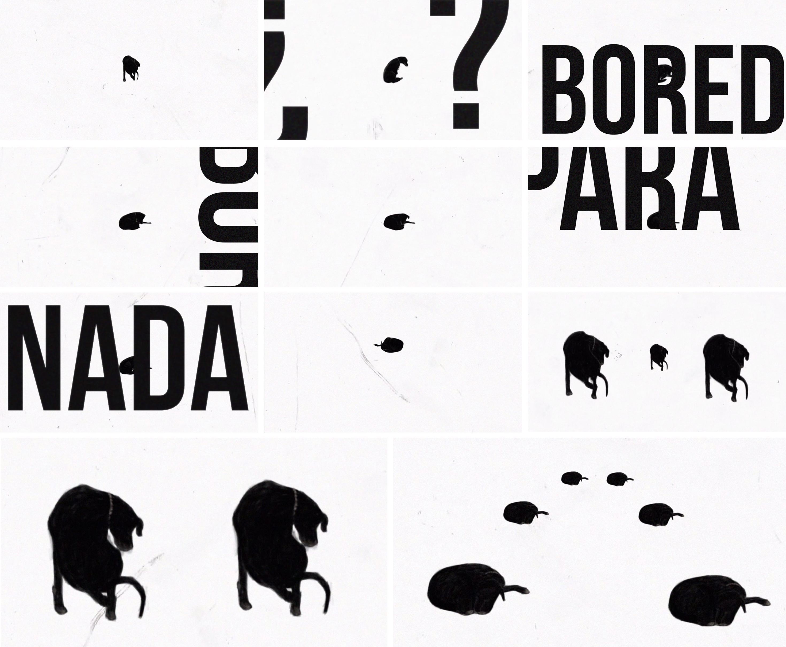

Bored? Para nada
Pieza audiovisual experimental desarrollada en torno a la idea de no llegar a sentirse cómodo y del concepto de titubear. Partiendo de ideas con una connotación algo negativa, la música y el montaje aportan dinamismo y diversión al resultado final.
La base de la pieza es una pequeña animación dibujada a mano, frame a frame, realizada a través de la técnica de la rotoscopia .
La figura del perro se mueve de forma natural, preparándose para acurrucarse en el suelo.
Proyecto personal sin fines comerciales.
Canción: Untitled #2
Artista: John Frusciante
Álbum: Niandra LaDes And Usally Just A T-Shirt
contacto
(+34) 662 13 47 98